Galeria de fotos
Fotografias são pequenas cápsulas do tempo que guardam pedaços da nossa história para sempre.
Abaixo seguem fotos de momentos especiais com pessoas que amo:
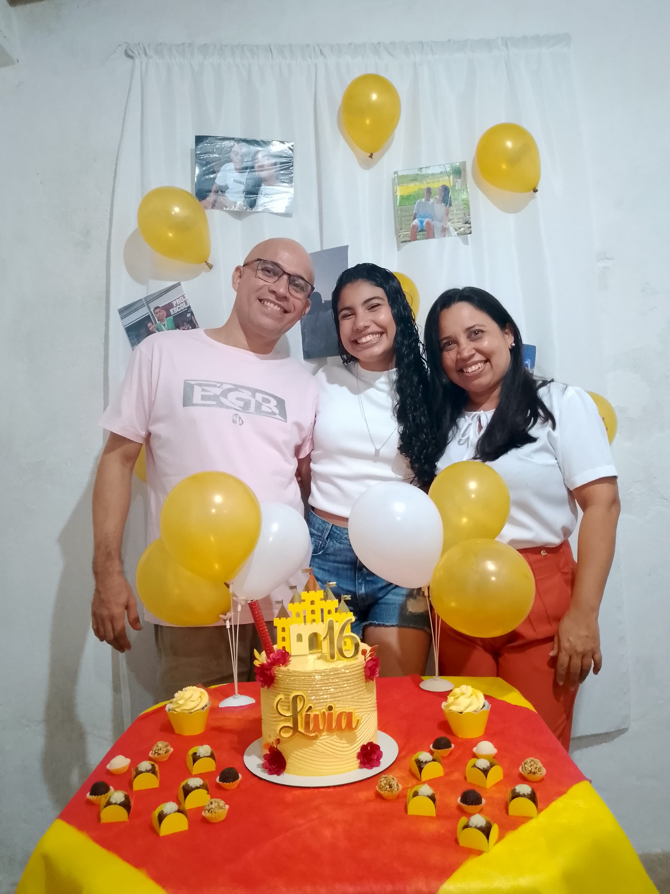
Esses são meus pais, Jocélio e Izabel. Foto tirada no dia do meu aniversário de 16 anos.
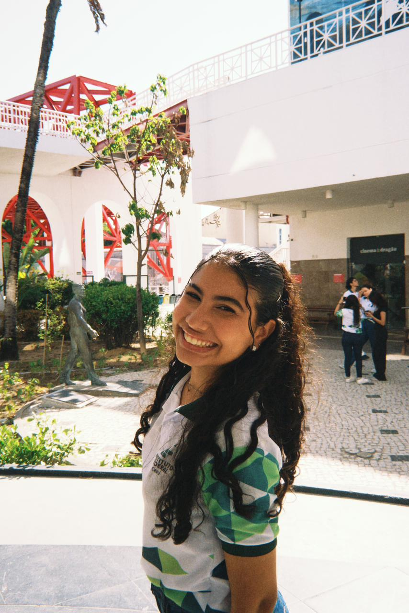
Essa foto foi tirada no dia do passeio para o Dragão do Mar.
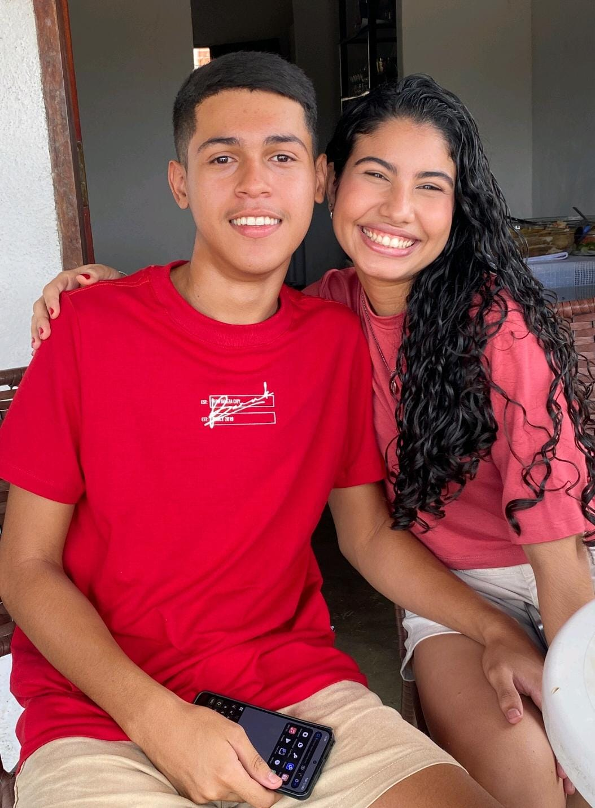
Meu namorado, Edivan. Foto tirada em um almoço de natal.
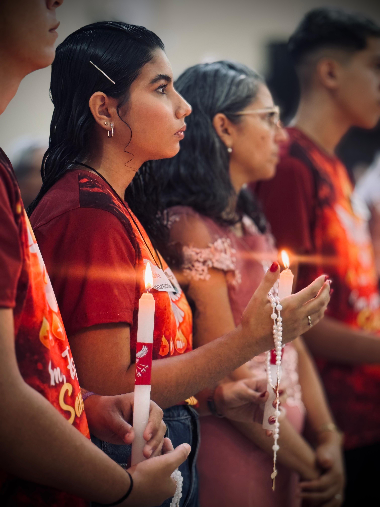
Um dia muito especial, minha crisma. Ao meu lado está minha madrinha Áurea.
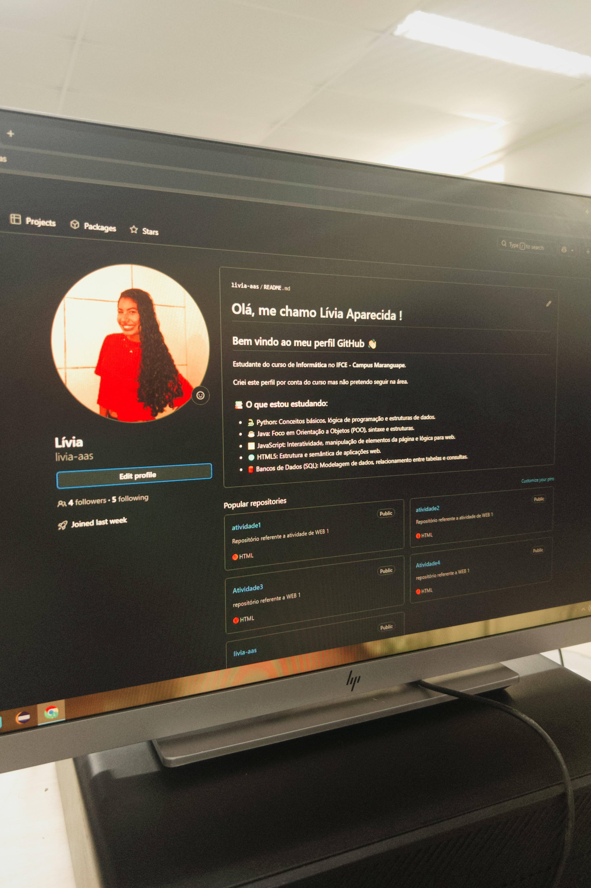
Foto do meu computador na aula de Web 1. Mostrando meu GitHub.
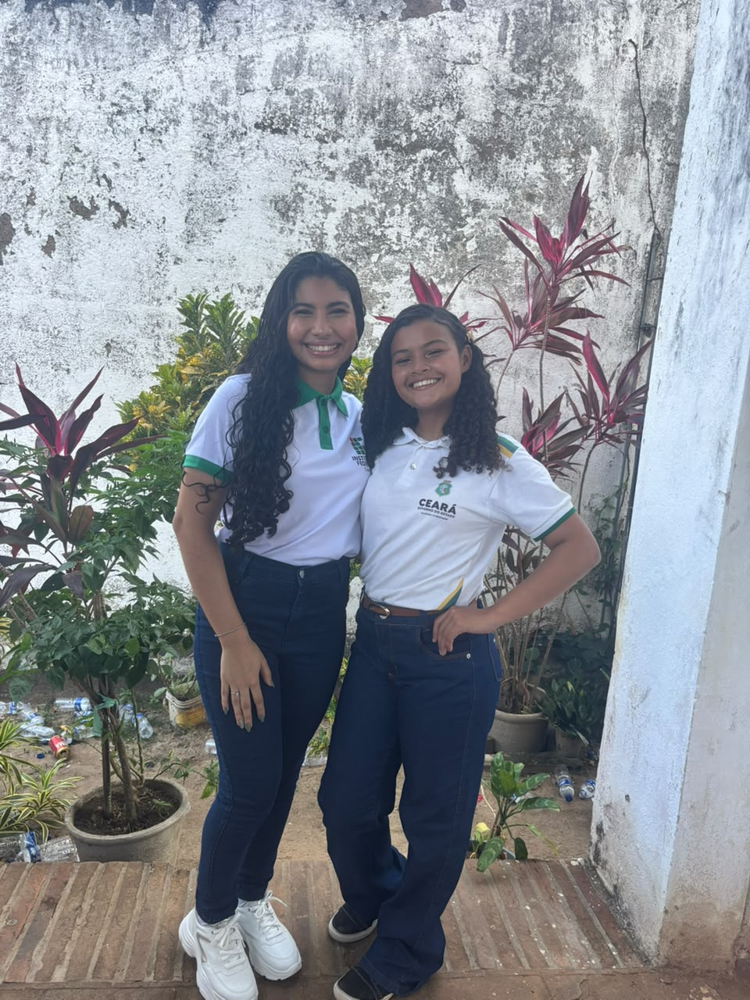
Eu e minha amiga do fundamental, Harianny. Foto tirada no dia do desfile cívico.
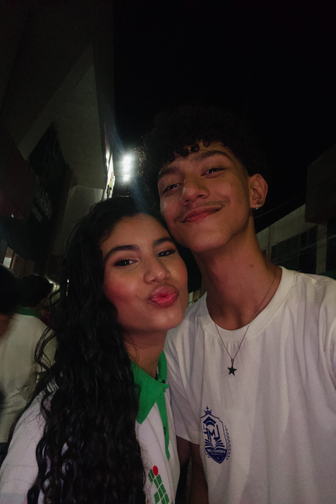
Uma das grandes amizades que fiz no IF, meu amigo Pietro. Foto tirada no dia do dsefile cívico.
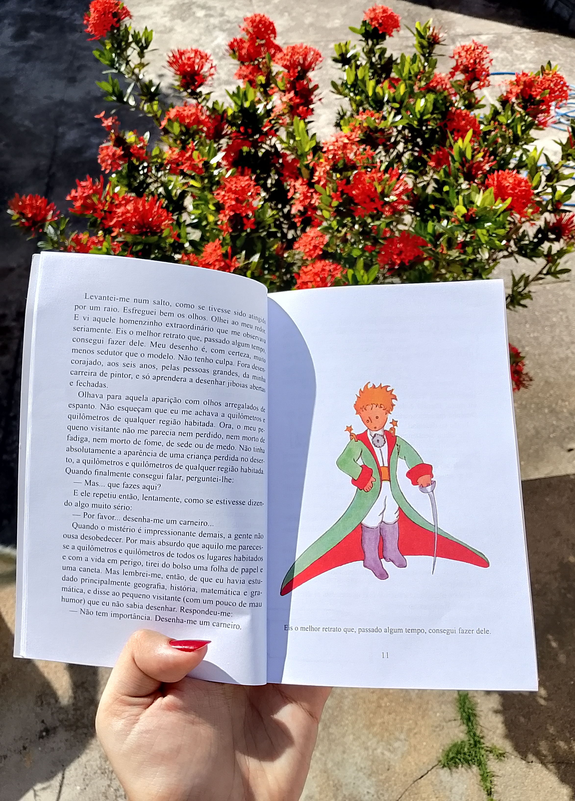
Foto de um dos meus livros. Este é o "Pequeno príncipe".
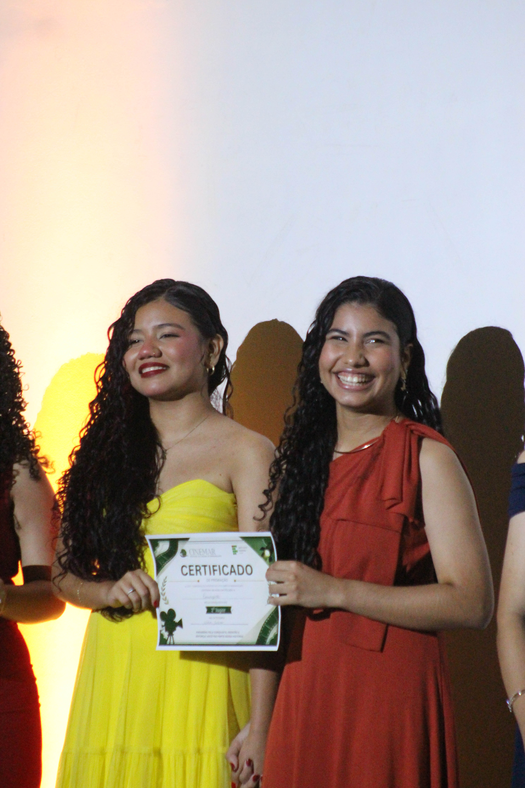
Eu e minha amiga Hanna na premiação de um festival chamado Cinemar.
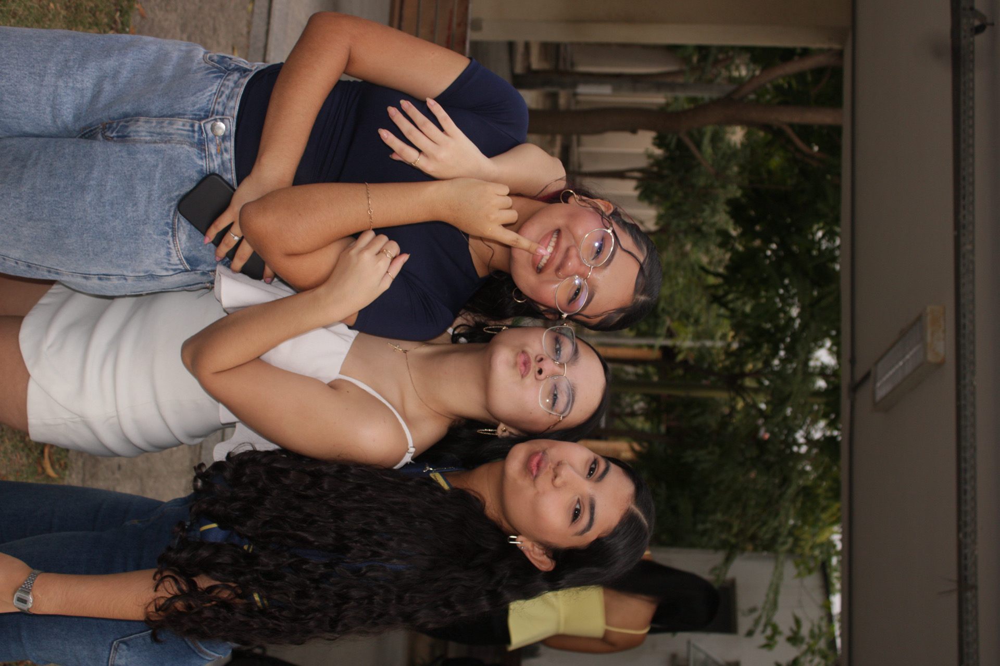
Foto tirada no dia do desfile da realeza. Hanna, Anelisy e eu, respectivamente.
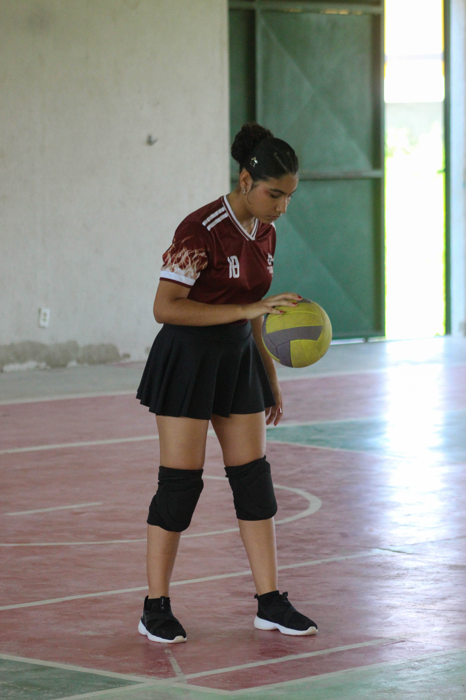
Foto tirada no interclasse, quando eu ainda jogava vôlei.
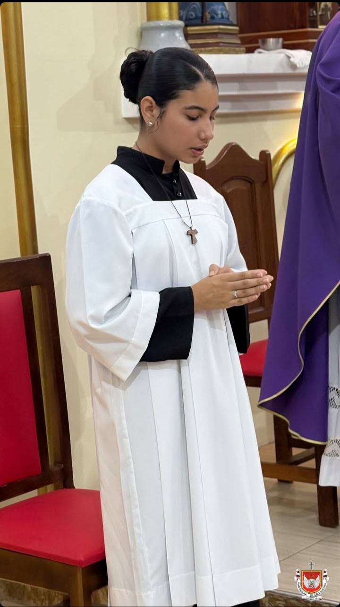
Eu quando era mestre de cerimônia, servindo em uma missa da minha paróquia.